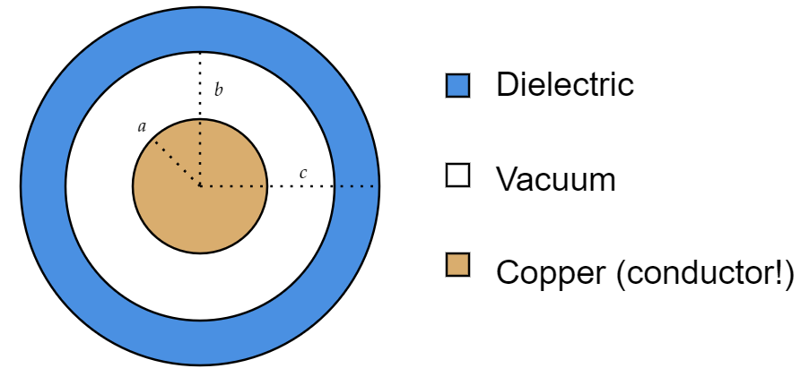

A certain coaxial cable consists of a copper wire, radius $a $, surrounded by a concentric copper tube of inner radius $c $ (Fig. 4.29).
The space between is partially filled (from $b $ out to $c $) with material of dielectric constant $\epsilon _r $, as shown.
Find the capacitance per unit length of this cable.
Here's a more explicit version of Figure 4.29
Where it is worth remarking that copper is a conductor.
Using Gauss's law for $\mathbf{D} $, we see that (cylindrical Gaussian surface)
\[D\cdot (\text{area })=D(2\pi s\ell) = Q \]Where $Q $ is some charge on the cable.
So $D $ is
\[D=\frac{Q}{2\pi s\ell} \]Now that we know $\mathbf{D} $, we can use it to find $\mathbf{E} $:
\[\mathbf{E}=\frac{1}{\epsilon }\mathbf{D} \]Where
\[\epsilon =\epsilon _0 (1+\chi _e) \]Up until $s=b $ (from $s=a $), $\chi _e=0 $ so:
\begin{align*} \mathbf{E}_{a\leq s\leq b} &= \frac{1}{\epsilon _0 }\mathbf{D} \\ &= \frac{Q}{2\epsilon _0 \pi s\ell} \hat{s} \end{align*}But once $s>b $, we enter a dielectric so $\chi _e \neq 0$ and here
\begin{align*} \mathbf{E}_{b\leq s\leq c} &= \frac{1}{\epsilon }\mathbf{D} \\ &= \frac{Q}{2\epsilon \pi s\ell} \hat{s} \end{align*}For some $\epsilon $ given by $\chi _e $ depending on the material.
We want the capacitance (per unit length), so let's first find the potential inside:
\begin{align*} V &= -\int_{c}^{a} \mathbf{E}\cdot d\mathbf{l} \\ &= -\int_{c}^{b} \frac{Q}{2\pi \epsilon \ell} \frac{1}{s}ds - \int_{b}^{a} \frac{Q}{2\pi \epsilon _0 \ell}\frac{1}{s}ds \\ &= \frac{Q}{2\pi \epsilon _0 \ell} \bigg( \ln (b/a)+\frac{\epsilon _0 }{\epsilon }\ln (c/b)\bigg)\\ &= \frac{Q}{2\pi \epsilon _0 \ell} \bigg( \ln (b/a)+\frac{1}{\epsilon _r}\ln (c/b)\bigg) \end{align*}Capacitance per unit length is given by $C/\ell $, and $C $ is given by $C=Q/V $, so:
\begin{align*} &{\;} \text{capacitance per unit length} \\ &= \frac{C}{\ell}\\ &= \frac{1}{\ell}\frac{Q}{V}\\ &= \frac{Q}{\ell} \frac{\ell}{Q}2\pi \epsilon _0 \frac{1}{\ln (b/a)+\frac{1}{\epsilon _r}\ln (c/b)}\\ &= \frac{ 2\pi \epsilon _0}{\ln (b/a)+\frac{1}{\epsilon _r}\ln (c/b)} \end{align*}